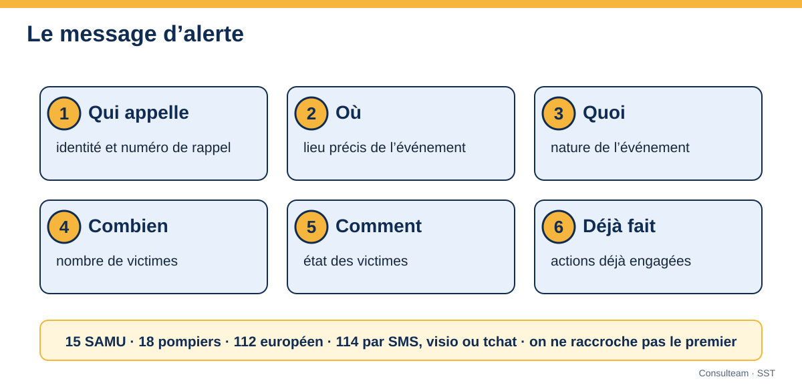

Module 4 · C4
Garantir une alerte adaptée
🎯 À la fin de ce module vous saurez :
- 4.1 Définir les éléments du message d'alerte
- 4.2 Identifier qui alerter selon l'organisation des secours
- 4.3 Faire alerter par la personne la plus apte ou alerter soi-même
Épreuve certificative 1 Matin
Le réflexeJe choisis qui alerte, je dicte le message, et je ne raccroche jamais le premier.
👀 En un coup d’œil

Comment lire : Le message suit un ordre fixe pour que les secours aient l’essentiel dès les premières phrases.

📌 À retenir
- Le message d’alerte comporte : identité et numéro de l’appelant, lieu précis, nature de l’événement, nombre de victimes, état des victimes, actions déjà engagées.
- En entreprise, alerter les secours internes prévus ; hors entreprise : 15 (SAMU), 18 (pompiers), 112 (urgences européen), 114 (par SMS, visio, tchat, pour les personnes sourdes ou malentendantes, et pour ne pas parler à voix haute en cas de violences).
- Choisir la personne la plus apte à alerter, lui demander de revenir rendre compte, envoyer quelqu’un accueillir les secours, ne jamais raccrocher le premier.
Pour aller plus loin
Pourquoi alerter vite Plan d’intervention (PI)
✅ Se valider
Quelques questions pour vérifier ce module. Aucune donnée n’est enregistrée.
Sources : Guide V5.01, Faire alerter ou alerter ; Manuel formateur 2024, compétence 4